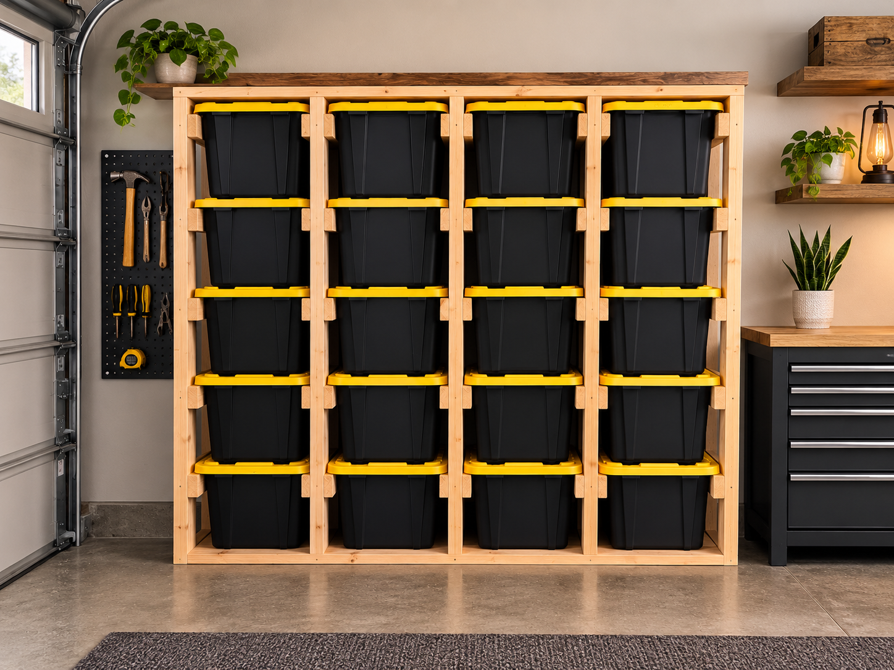

Hand-built in Arvada • Serving Denver metro
Custom Garage Tote Storage Systems in Colorado
Custom garage tote storage racks built around your bins and space in Arvada, Denver and the Colorado Front Range.

Built around your totes
The rack can be sized for the bins you already own instead of making you replace everything.
Use the space better
Turn stacked bins into individually accessible storage for garages, basements and workshops.
Custom capacity
Need a small wall unit or a larger storage system? The build can be adapted to the available footprint.
Service area
Reclaim to Sustain is based in Arvada and serves homeowners across the Denver metro area, including Denver, Westminster, Wheat Ridge, Lakewood and nearby Colorado communities. Because every build is different, reach out with your location and project details.
Have a space in mind?
Send the dimensions, a photo of the space, or an inspiration image. Reclaim to Sustain can build around what you actually need.
Request a custom build →